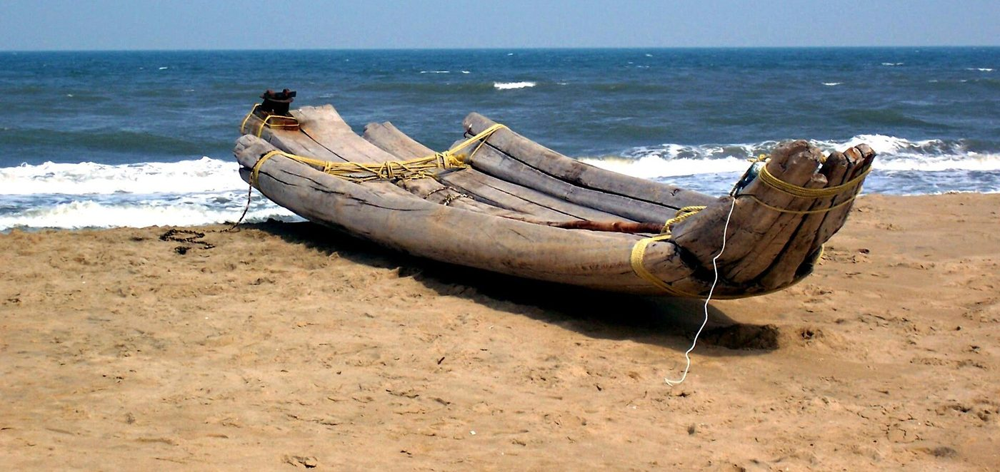

Chapter 17: Coastal Communities: Fishers, Sailors and Maritime Knowledge¶
Chapter Overview
Ships, ports and merchants depended on people who are seldom named in the sources: fishers, boatmen, sailors, divers, salt-makers and shipwrights. This chapter introduces the principal coastal and seafaring communities of the subcontinent, Hindu, Muslim and Christian, and is frank about their often low place in caste hierarchies. It describes their boats, their working knowledge of tides, winds and fish, and some well-attested forms of their religious life. It follows the curing and trade of fish, in which women’s work was central, and the island economies of Lakshadweep and the Maldives, and then turns to three other coastal industries (pearl and chank diving, salt-making, with the colonial salt monopoly, and the use of mangrove forests) and to the changes of the last seventy years.
17.1 Who Lived by the Sea¶
The coasts of the subcontinent were home to many communities whose livelihood depended on the sea: fishers who worked from the beach or from small craft, boatmen who carried goods and passengers through the surf and along the coast, deep-sea sailors and pilots, divers for pearls and chank, salt-makers, and the carpenters who built boats. These communities were usually organised as castes (jāti) or as distinct religious groups, each with its own dialect, customs and territory along the shore. Their knowledge was transmitted by practice within families and was rarely written down, and so most of what we know of them comes from the last two centuries: colonial ethnographies and gazetteers, the work of anthropologists and historians, and the communities’ own testimony.
Their social position was generally low. Brahmanical norms treated the killing of fish as polluting, and the Manusmṛti places the Mārgava, also called Dāsa or Kaivarta, who lives by work on boats, among the mixed castes born of irregular unions (Manu 10.34) (Olivelle 2004). In many regions fishing castes were ranked low and excluded from temples and from landholding, though the hierarchy varied a great deal from coast to coast, and some seafaring and trading groups held considerable wealth and local power. Conversion to Christianity and Islam was common on the coasts, and was often a collective decision by a community in search of protection or of status (Bayly 1989). Today many fishing communities are classified as Other Backward Classes, and a few as Scheduled Castes or Scheduled Tribes.
17.2 Communities of the West Coast¶
Gujarat and Kutch. The Kolis are a large and varied cluster of castes in Gujarat and Maharashtra, many of them cultivators; on the coast Koli groups fished and sailed. The Khārvās of Saurashtra and Kutch, in ports such as Porbandar, Veraval and Mandvi, were the hereditary sailors of Gujarat’s sailing ships (Gujarati vahāṇ), which traded to the Gulf, Arabia and East Africa until the mid-twentieth century and in some cases still do. Among Muslims, the Bhaḍālās of the Kutch and Saurashtra coast were shipowners and sailors in the same trade. The Vāghers of Okhamandal, around Dwarka, Hindu and Muslim, combined fishing, sailing and, in British eyes, piracy; British naval actions against “pirates” of the Kathiawar coast in the early nineteenth century were directed partly at them, and they rose against British and Gaekwad authority in 1857–59. Lakshmi Subramanian has traced how the states of the western littoral used the category of piracy to bring such maritime groups under control (Subramanian 2016). As with the Kuñjāli Marakkārs and Kānhojī Āṅgre (Chapter 15), the label “pirate” tells us as much about who held power at sea as about the people it described.
The Konkan. Around Mumbai the Koli fishing villages (koḷīvāḍā) are among the oldest settlements of the islands, and Koli women have long dominated the retail sale of fish in the city. The Gābits of the southern Konkan, the Kharvis of the Goa and Karnataka coast and other groups fished and served as sailors, including in the Maratha fleets of the seventeenth and eighteenth centuries (Apte 1973).
Malabar and Travancore. In Kerala the principal Hindu fishing castes are the Mukkuvar, mainly in Malabar, and the Arayar (Araya) of central Kerala. The Mukkuvar of the far south, in present-day Thiruvananthapuram and Kanyakumari districts, became Catholic in the sixteenth century, when Francis Xavier baptised fishing villages on the Travancore coast in the 1540s, and remain so; in Malabar some fishing groups became Muslim. Kalpana Ram’s study of Catholic Mukkuvar women in Kanyakumari describes a community in which women carried much of the work of marketing and the household economy, while being excluded from the boats and the sea (Ram 1991). The Māppiḷas, the Muslims of Malabar, emerged from the settlement of Arab and Persian merchants, intermarriage and local conversion; they included wealthy merchants and shipowners as well as boatmen, fishers and labourers (Prange 2018). Chapter 12 discusses their history.
Lakshadweep. The people of the Lakshadweep (Laccadive) islands, Muslim and Malayalam-speaking except on Minicoy, where a language close to Dhivehi of the Maldives is spoken, lived by coconut cultivation, coir-making and fishing. Their sailing vessels (oḍam) carried coir, copra and dried fish to the Malabar coast in the fair-weather season and brought back rice and other goods. The islands were under the Ali Rājās of Kannur and later under the British, and the rulers’ monopoly of the coir trade was a long-standing grievance of the islanders. Minicoy men were known in the twentieth century as sailors on merchant ships.
17.3 Communities of the East Coast and Sri Lanka¶
The Paravar. The Paravar (Bharathar) of the Gulf of Mannar coast, between Kanyakumari and Rameswaram, were fishers and divers for pearls and chank. In the 1530s, in conflict with Muslim merchants over the pearl fishery and its revenues, the Paravar converted collectively to Catholicism to obtain Portuguese protection, and Francis Xavier worked among them in the 1540s. Their headman (jāti talaivaṉ) at Tuticorin (Thoothukudi) was both a caste chief and a lay leader of the church, and the community kept its own hierarchy and institutions within Catholicism (Bayly 1989; Subrahmanyam 1990).
The Marakkāyar. The Marakkāyar were Tamil-speaking Muslims of the Coromandel and Gulf of Mannar ports, such as Kāyalpaṭṭiṉam, Kīḻakkarai, Nāgūr and Nāgapaṭṭinam. They were shipowners and merchants trading to Sri Lanka, Southeast Asia and the Malabar coast, and dominant in the pearl and chank trade before the Portuguese arrived. Other Tamil Muslim groups, such as the Labbais, included fishers, divers and weavers (Bayly 1989; Arasaratnam 1994).
Other Tamil and Sri Lankan communities. The Paṭṭiṉavar fished from the beaches of the northern Tamil coast, around Chennai and Puducherry, using log rafts and nets. The Karaiyar, a Tamil fishing and seafaring caste of northern Sri Lanka and parts of the Tamil coast, and the Sinhala Karāva of the west coast of Sri Lanka, were also sailors and traders. Further north, Telugu-speaking fishing communities such as the Jālāris of the north Andhra coast and the Noliyās of southern Odisha worked the surf beaches, and in Bengal fishing castes such as the Kaibarttas and Mālos worked the rivers, estuaries and the sea.
Sailors for hire. Khalāsī, a word of Arabic origin for a seaman or labourer, was used across western India for ship’s hands and dock workers; at Beypore it denotes a Māppiḷa group known for launching and hauling heavy hulls (Chapter 13). From the sixteenth century European ships hired Asian seamen, whom the English called lascars (from Persian lashkar). By the nineteenth century large numbers of men from Ratnagiri, Gujarat, Bengal and Sylhet served on British merchant ships and steamers, on separate contracts and at lower wages than European sailors, a labour history that belongs to Chapter 19.
17.4 Boats and the Work of Fishing¶
The construction of traditional craft is treated in Chapter 13; here the focus is on how they were used. The standard survey is McGrail et al. (2003), based on fieldwork in the 1990s.
On the surf beaches of the Coromandel coast the kaṭṭumaram (Tamil, “tied logs”), a raft of shaped logs lashed together (Figure 17.1), could be launched through breaking waves, would not sink if swamped, and could be taken apart and carried up the beach. It carried a small crew, with a sail and paddles, and was used for hook-and-line and net fishing offshore. The English word “catamaran” derives from it, although the English word now denotes a twin-hulled boat. The masula of the Coromandel coast was a large, frameless boat of planks sewn together with coir, flexible enough to survive the surf. Until harbours were built in the late nineteenth and twentieth centuries, masula crews carried all passengers and cargo between ships anchored in the roads and the beaches of Madras and Masulipatnam, and they formed a recognised occupational group whose services European travellers often described.


On the Kerala and Tamil coasts plank-built boats called vaḷḷam and tōṇi were used with large shore-seines and boat-seines, nets hauled by teams of men. The Lakshadweep islanders, especially on Minicoy, fished for tuna with pole and line, using live bait, from rowing and sailing boats. In Kutch and Saurashtra the sailing koṭiyā and similar vessels carried cargo to the Gulf and East Africa, while smaller craft fished inshore (McGrail et al. 2003).
Fishing was organised by community and by family. Crews were often kin, and the catch was divided by shares between boat owners, net owners and crew according to local custom. Women’s work was essential, if less visible: on most coasts women did not go to sea, but they mended and made nets, dried and salted fish, processed prawns and sold the catch, often travelling long distances to inland markets (Ram 1991). Merchants and moneylenders who advanced money for boats and nets in return for the right to buy the catch were a constant presence.
17.5 Fish as a Commodity¶
Fresh fish spoils within hours in a tropical climate, and before ice and refrigeration only a small part of the catch could be eaten fresh, on the coast itself or in towns close to it. The rest had to be preserved. Fish curing turned a perishable catch into a commodity that could be stored, carried inland and shipped overseas, and it linked fishing villages to markets far from the sea.
Methods. The simplest and commonest method was drying in the sun. Small fish such as anchovies and sardines were spread on the sand or on mats; larger fish were split, gutted and salted before drying. Fish could also be salted in pits or vats, packed in layers of salt, or dried on racks. On the Konkan coast the Kolis dried the bombil (Harpadon nehereus, the “Bombay duck” of Anglo-Indian cookery) on bamboo frames along the shore. On the Bengal coast and in the estuaries of the delta, dried fish (Bengali śuṭki) was made in large seasonal camps. Fermented fish and fish pastes were made around the Bay of Bengal, above all in Burma and the north-east of the subcontinent. In years of great sardine landings on the Malabar coast, much of the catch was boiled for oil or dried and sold as manure.
Markets. Dried and salted fish was cheap protein for people who could rarely afford meat or fresh fish. It was carried inland by pack animals, carts and boats, and later by rail, to the markets of the interior: from the Malabar and Kanara coasts to the plateau of Mysore, from the Coromandel coast to the Tamil interior, and from the Bengal coast up the rivers. Dried fish was sold at the weekly markets of the countryside alongside salt, which was traded inland along the same routes. Overseas, Sri Lanka was a major market for dried and salted fish from the south Indian coast, as it was for south Indian rice. In the Bay of Bengal the trade in dried and fermented fish connected the coasts of Bengal, Arakan and Burma. The curing and trade of fish were often in the hands of people other than the fishers: merchants who advanced money against the catch, curers who bought the fish on the beach, and traders who carried the dried product inland.
Salt and curing under British rule. Curing needed salt, and the British salt tax (Section 17.10) made salt dear. Because curers could not afford to salt their fish properly, much of the fish sent inland was poorly cured. From the late nineteenth century the Madras government opened fish-curing yards on the Malabar and Kanara coasts and elsewhere, enclosed sites where licensed curers could buy salt at a reduced price under official supervision, so that the duty would not be evaded. In the early twentieth century the Madras Fisheries Department, set up under Sir Frederick Nicholson, tried to improve curing methods and promoted the fish-oil industry. These measures were the beginning of state involvement in the fisheries that would grow greatly after independence (Section 17.13).
17.5.1 Women in Processing and Selling¶
The division of labour on most Indian coasts kept men at sea and women on land, and the processing and sale of fish were largely women’s work (Section 17.4). Women met the boats on the beach, bought or received fish, and carried it in baskets on their heads to nearby villages and markets, or to the bus and railway for longer journeys. They dried and salted fish, sold it in local markets, and handled much of the household’s cash and credit. The Koli women of Mumbai, who dominate the city’s retail fish trade, are one well-known example; women fish sellers in the markets of Goa and Kerala are another.
Kalpana Ram’s study of the Catholic Mukkuvar of Kanyakumari is the fullest account of this work. Mukkuvar women were kept from the boats and the sea by custom and belief, and were excluded from authority in the church and community. Yet they carried much of the economic weight of the household: they sold fish, managed the household’s borrowing and lending, and held it together through the months of poor catches. Ram also traces how the capitalist transformation of the fishery changed women’s position, in many respects for the worse (Ram 1991). Her account is a warning against seeing women’s market role as a sign of independence: they handled money, but on terms set by others.
The export trade in frozen prawns from the 1960s created new kinds of women’s work. The peeling and grading of prawns in sheds and processing plants was done mainly by women, many of them young migrants working on contract far from home, in conditions that fishworkers’ organisations have campaigned against. Women vendors were also among those most affected when mechanised boats and merchants with lorries and ice reorganised the marketing of fish.
17.6 The Islands: Lakshadweep, the Maldives and Cowries¶
The coral islands off the west coast, the Lakshadweep group and, further south, the Maldives, formed a distinctive maritime world. Their people had little land and few resources except the coconut palm, the reef and the sea. They lived by exporting coconut products, dried fish and cowries, and they imported rice, cloth and other necessities from the mainland. The economy of Lakshadweep is described above (Section 17.2).
The Maldivians were Muslim, Dhivehi-speaking islanders under their own sultans. They were skilled sailors who traded to Malabar, Sri Lanka and Bengal. Their most distinctive food export was “Maldive fish”: skipjack tuna, caught with pole and line, boiled, smoked and dried until hard, which kept for long periods and was sold in Sri Lanka and south India, where it became a staple seasoning. Coir rope from the islands was used to sew and rig the ships of the western Indian Ocean.
The islands’ best-known export was the cowrie shell (Monetaria moneta), gathered on the reefs. Cowries served as small change in Bengal and other parts of eastern India for many centuries, and their use as money is discussed in Chapter 5; Ibn Baṭṭūṭa’s account of the Maldivian cowrie trade in the 1340s is cited in Chapter 12. From the sixteenth century the Portuguese, and then the Dutch and English companies, bought cowries in the Maldives, in Bengal and in Sri Lanka and shipped them to Europe, where they were re-exported to West Africa. There they were a currency of the Atlantic slave trade, and an ordinary money in many African markets (Hogendorn and Johnson 1986). A small, cheap shell from the Indian Ocean thus connected the islanders of the Maldives with the markets of Bengal, the warehouses of Amsterdam and London, and the slave trade of the Atlantic. The demand for cowries in West Africa declined in the nineteenth century, when large quantities of a related East African species flooded the market and colonial currencies replaced shell money.
17.7 Knowledge of Sea, Weather and Fish¶
Fishers and sailors knew their waters with great precision, and this knowledge was practical, local and tested daily. It is best described as it was used, without either dismissing it or presenting it as a hidden science.
Tides and seasons. Every coastal community knew that tides follow the moon, with the highest ranges at new and full moon. On the west coast the year was divided by the south-west monsoon: from about June to August the sea was too rough for small craft, and the opening of the season afterwards was marked by festivals. On the east coast the north-east monsoon and the cyclones of October to December posed the greater danger. The knowledge of the monsoon that made long-distance voyages possible is treated in Chapter 14.
Fishing grounds. Kerala fishers located underwater rocks and reefs where fish gathered by lining up pairs of landmarks on the shore, and kept mental maps of such grounds, which were often regarded as the property of particular villages or families. They knew the seasonal appearance of shoals of oil sardine and mackerel, the signs of fish at the surface (birds, the colour of the water, phosphorescence at night), and the movements of prawns in the backwaters.
Mud banks. A striking example of local knowledge on the Kerala coast concerns the mud banks (Malayalam cākara) that form close inshore during the south-west monsoon. Patches of the sea become calm, because the suspended mud damps the waves, and fish and prawns concentrate there. Fishers knew where and when these banks appeared and fished them even in the monsoon months when the open coast was closed.
Such knowledge was exact within its range and limited outside it. It did not prevent the losses of men and boats to storms that were part of the life of every coastal village, and it was built for the scale of traditional fishing, not for the much greater pressure on fish stocks that came with mechanisation.
17.8 Religious Life¶
Coastal religion was as varied as the communities themselves, and only a few well-documented examples can be given here.
At Tuticorin the Paravar community’s central shrine is the church of Our Lady of Snows (Paṉimaya Mātā), whose image has been venerated there since the sixteenth century. The annual feast in early August draws very large crowds, and on special occasions the image is carried through the town on a golden car (taṅkat tēr), a procession that borrows its form from Tamil temple festivals. The cult expresses both the Paravar’s Catholic identity and their pride as a caste (Bayly 1989). Along the Coromandel coast the dargāh of the Sufi saint Shāhul Ḥamīd at Nāgūr, near Nāgapaṭṭinam, is visited by Muslim and Hindu fishers and sailors alike, and its saint is credited with protecting ships at sea (Bayly 1989).
On the Konkan coast the Koli communities mark the end of the monsoon on the full moon of Śrāvaṇa (July–August) with Nāraḷī Pūrṇimā, when coconuts are offered to the sea before the boats return to fishing. Fishing villages on many coasts bless their boats and nets at the opening of the season, and have shrines to local goddesses whose protection is sought before going to sea. In the Sundarbans, Hindu and Muslim fishers, woodcutters and honey-collectors alike worship Bonbibi, the forest goddess who protects those who enter the forest from tigers (Jalais 2010).
17.9 Pearls and Chank in the Gulf of Mannar¶
The pearl banks of the Gulf of Mannar, off the coasts of Tamil Nadu and north-western Sri Lanka, were among the richest in the world, and their fishery was always closely controlled by rulers. The Periplus (§59) mentions the pearl fishery near Kolchoi (Korkai) in the Pāṇḍya kingdom and says that it was worked by condemned criminals (Casson 1989). The Arthaśāstra places pearls among the products of the sea under the official in charge of mines and sea products (khanyadhyakṣa) and expects pearl fishers to pay for the use of boats (AŚ 2.12, 2.28; see Chapter 15). Marco Polo describes the fishery in the late thirteenth century: merchants formed partnerships, hired boats and divers, and paid the king a share of the pearls, and divers worked in a short season in spring, protected by charmers who were said to keep the sharks away (Polo 1903).
From the 1530s the Portuguese took control of the fishery on the Indian side, through their alliance with the newly converted Paravar; the Dutch, who took Tuticorin and the Sri Lankan coast in the mid-seventeenth century, organised periodic great fisheries, at which large numbers of divers from many communities gathered; and the British continued them in the nineteenth century. The beds yielded irregularly, and the fisheries were held only in good years; overexploitation and the changing market for natural pearls brought them to an end in the twentieth century (Arasaratnam 1994).
The diving itself was skilled and dangerous work, done on held breath with a stone weight to descend and a rope to be hauled up. The chank (śaṅkha, the sacred conch, Turbinella pyrum) was also dived for on the same coast; the shells were sent to Bengal and elsewhere to be cut into bangles and ritual trumpets, a trade with roots in the Harappan period (Chapter 11).
17.10 Salt¶
Salt was made along most of the coasts by evaporating sea water or brine in shallow pans, and was carried inland in large quantities. The Arthaśāstra has a superintendent of salt (lavaṇādhyakṣa) who collects the king’s share and duties on imported salt (AŚ 2.12; Chapter 2).
In the Little Rann of Kutch the Agariyas make salt from underground brine. After the monsoon, when the flooded Rann dries out, families move onto the salt flats, dig wells, pump brine into rectangular pans and work them through the dry season, raking the crystals as they form. The work is done in extreme heat and glare and takes a heavy toll on health, and most producers depend on traders for advances and sell at prices the traders set. Salt pans on the coasts of Gujarat, Tamil Nadu (around Tuticorin and Marakkanam) and Odisha are worked by other communities under broadly similar conditions.
Salt became a political issue under British rule. The East India Company established a monopoly of salt in Bengal in the late eighteenth century, and a salt tax was levied across British India. On the Bengal coast, around Hijli, Tamluk and the edge of the Sundarbans, salt was made not by solar evaporation, as in the west and south, but by boiling brine over fires fed with wood and grass from the coastal forests. The salt-boilers (malaṅgī) worked for the Company’s salt agencies on advances, under a system that resembled the dādanī advances to weavers (Chapter 8) and left them deeply dependent on the agencies’ officers. In the nineteenth century Bengal salt was increasingly displaced by imported salt, much of it from Cheshire, shipped from Liverpool, and the boiling industry of the delta declined.
Elsewhere the Company and then the Crown taxed salt in different ways, by monopoly in Madras and by excise duties in Bombay and the north. To stop untaxed or lightly taxed salt from entering the territories where the duty was highest, the government maintained an inland customs line across northern India, guarded by customs posts and in long stretches by a thick hedge; it was abolished at the end of the 1870s, when the duties were brought closer together. The Indian Salt Act of 1882 brought the manufacture and sale of salt throughout British India under government control and made unlicensed manufacture an offence. On the coasts this meant that people who had always scraped salt from the shore, or let sea water dry in pans for their own use, now needed a licence, and preventive officers patrolled the salt flats. Because the tax fell on a necessity, it bore most heavily on the poor, and Indian critics attacked it from the early years of the Indian National Congress. It also raised the cost of curing fish (Section 17.5). In 1930 Gandhi chose the salt tax for his campaign of civil disobedience: he walked from Sabarmati to the coast at Dandi in south Gujarat between 12 March and 6 April and made salt from the sea in defiance of the law, and the campaign spread along the coasts of India (Chapter 19).
17.11 Mangroves and the Sundarbans¶
Mangrove forests fringe many estuaries and creeks, from the Gulf of Kutch to the Bhitarkanika in Odisha and Pichavaram in Tamil Nadu. The largest is the Sundarbans of the Ganga–Brahmaputra delta, shared between India and Bangladesh. For coastal people mangroves provided fuel, timber for small craft and houses, honey, and nursery grounds for fish, crabs and prawns. In the Sundarbans whole communities live from fishing, crab-catching, honey-collecting and woodcutting in a forest that is also the home of tigers, and their lives are shaped both by the danger of the forest and by the restrictions of the forest department (Jalais 2010).
Large areas of mangrove have been cleared for agriculture, aquaculture, salt pans and ports. Mangroves reduce the force of waves and storm surges to some degree; how much protection they gave in particular places during the tsunami of 2004 has been debated, but their value for fisheries and coastal protection is now widely recognised.
17.12 Builders and Navigators¶
Two places on the west coast still build large wooden ships, Beypore in Kerala and Mandvi in Kutch, and their techniques are described in Chapter 13. From the community side, both depend on hereditary groups of carpenters, working under a master builder who carries the design in his head, and on a market across the Arabian Sea: for most of the twentieth century the customers were merchants of the Gulf states. In Kutch and Saurashtra the Khārvā and Bhaḍālā sailors who crewed these ships to Oman, Yemen and East Africa, and the Kachchhi navigators (mālam) who guided them, formed tight-knit groups with their own customs, and some families kept written notes of routes and stars (Chapter 14). The Lakshadweep islanders sailed their own craft between the islands and the mainland by landmarks, stars, swell and the behaviour of birds. These traditions are real and valuable, but they are recent and local, the latest forms of a practice that changed constantly.
17.13 The Twentieth Century and After¶
The last seventy years have transformed the coasts. From the 1950s the Indian government, with foreign assistance (notably the Indo-Norwegian Project in Kerala from 1953), promoted mechanised boats and trawling, and the export of frozen prawns created a lucrative new trade. Trawlers owned by investors from outside the fishing communities competed with traditional craft for the same inshore grounds, and fishers on many coasts saw their catches fall. In the 1970s and 1980s fishworkers’ organisations, among them the National Fishworkers’ Forum, campaigned for the protection of inshore waters for traditional craft and for a ban on trawling during the monsoon spawning season; such bans were introduced in Kerala in the late 1980s and later extended across the country. Traditional craft were themselves motorised, and new kinds of nets, such as the large ring-seine, spread rapidly.
Coastal land has become valuable. Ports, industries, power plants, tourism and urban growth have taken over beaches where boats were landed and fish dried, and fishing villages, which seldom held formal title to the land, have often been displaced. Coastal regulation laws have tried, with mixed success, both to protect the shore and to recognise fishers’ customary use of it.
The tsunami of 26 December 2004 struck the Andaman and Nicobar Islands and the coasts of Tamil Nadu, Puducherry, Andhra Pradesh and Kerala. Fishing communities, living closest to the sea, suffered most of the deaths and lost their boats, nets and houses; in mainland India the Nagapattinam district of Tamil Nadu was the worst affected. The relief and rebuilding that followed brought new boats and houses, but also disputes over who received aid and over plans to relocate villages away from the shore.
17.14 Conclusion¶
The people who supplied the crews, pilots, divers, salt and fish of India’s seaborne trade were, for most of their history, poor and of low status, and the merchants who profited from their skills seldom recorded them. Their collective conversions, Catholic and Muslim, were among the few choices that gave them protection and dignity, and their recent history, from trawling to the tsunami, shows how little that position has changed.
Further Reading¶
McGrail et al. (2003) is the essential survey of the boats. Bayly (1989) explains the Christian and Muslim communities of the Tamil coast, including the Paravar and Marakkāyar, and Ram (1991) is a fine study of a Kerala fishing community and its women. Jalais (2010) describes the people of the Sundarbans. For the pearl fishery and the Coromandel coast see Arasaratnam (1994) and Subrahmanyam (1990); for the littoral societies of the ocean as a whole, Pearson (2003). Hogendorn and Johnson (1986) follows the cowrie from the Maldives to West Africa.